A city woven from water
Dhaka is in perpetual dialogue with the monsoon through the hydrological cycle, its very existence woven from and enmeshed within fluctuating monsoon seasons.
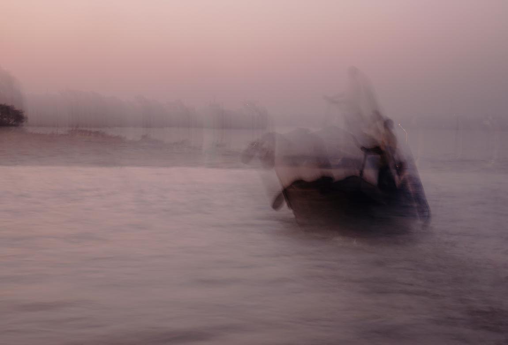 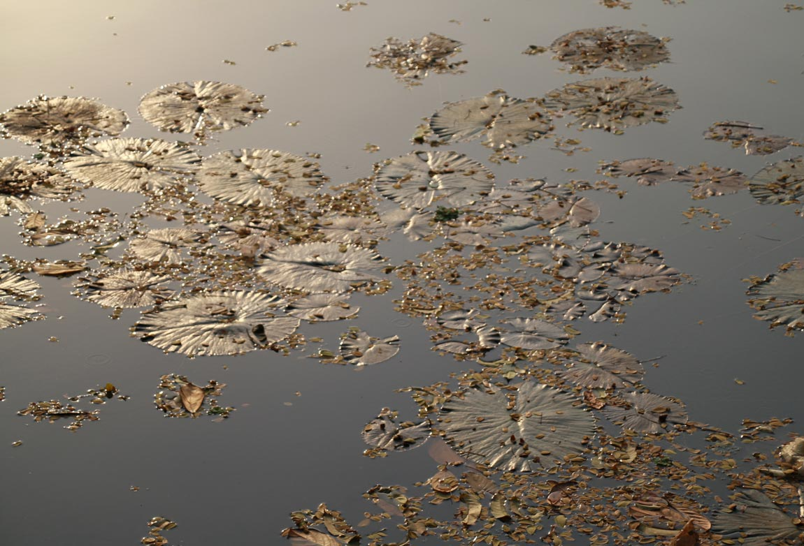 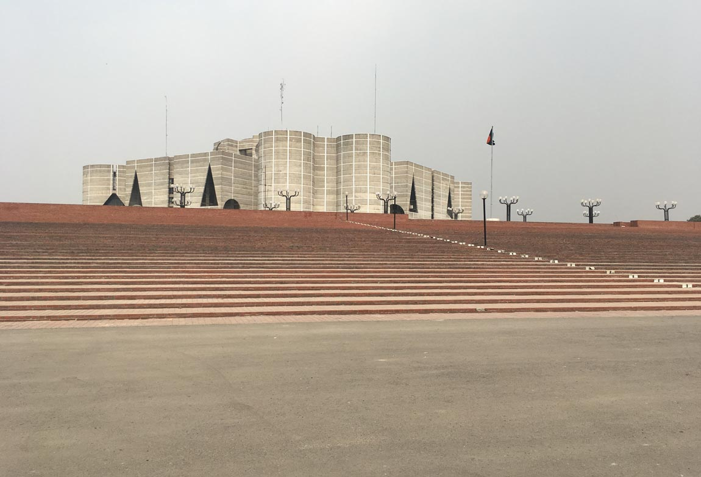 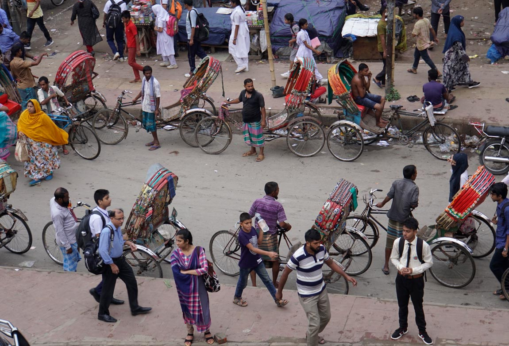 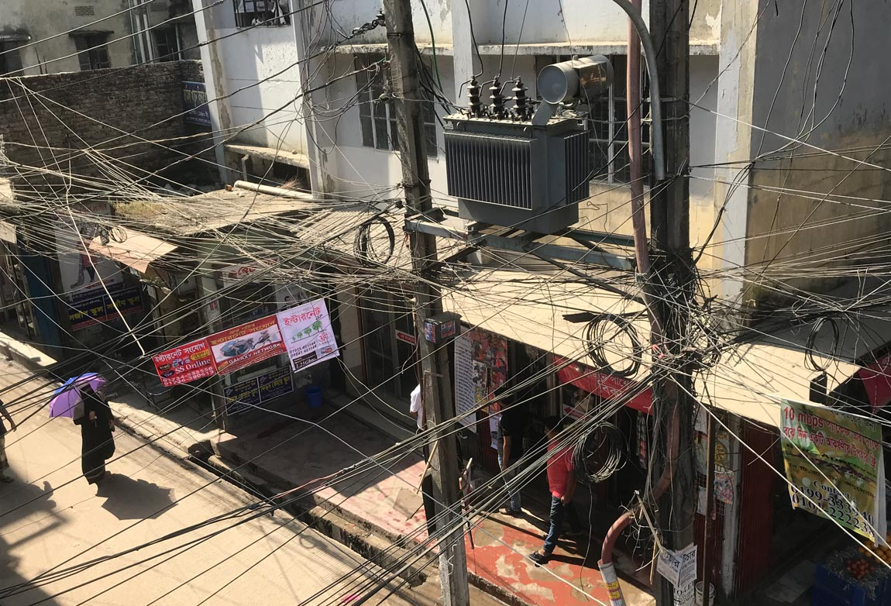Terra-aqueous land
Bangladesh is a fluctuating monsoonal terrain. It is almost half covered in water between June and October each year when it receives huge inflows of water and sediment carried from the Himalayas by the Ganges, Brahmaputra and Meghna Rivers. In addition to this, it is impacted by oceanic dynamics that originate in the Bay of Bengal such as tides, reversing currents, cyclones and storm surges that frequently push seawater many kilometres inland and shape coastal ecologies
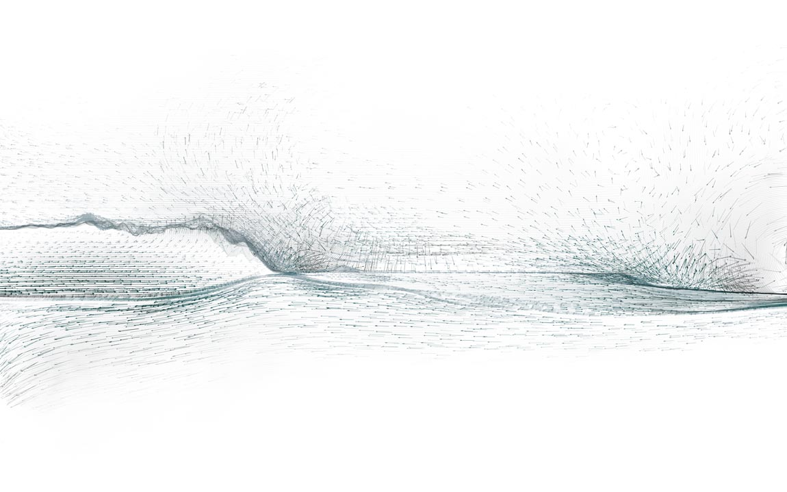

Write Caption: Sed ut perspiciatis unde omnis iste natus error sit voluptatem accusantium doloremque laudantium, totam rem aperiam, eaque ipsa quae ab illo inventore veritatis et
Char islands
Bangladesh’s sediment heavy rivers frequently braid or shift, creating precarious, nomadic units of land called chars that cannot be mapped, legally owned or recorded in revenue papers because they move around too quickly and too frequently. Chars have historically been occupied by precarious, marginal people, often without official documents. Those who live on them lead perilous, calamitous lives. When the monsoon breaks and the flow of rivers increase each year, their land frequently deserts them, their shelters are devastated, crops are damaged and livestock washed away. As the river recedes, new chars emerge and fierce, at times violent struggles to occupy them, overseen by local strongmen, ensue.


 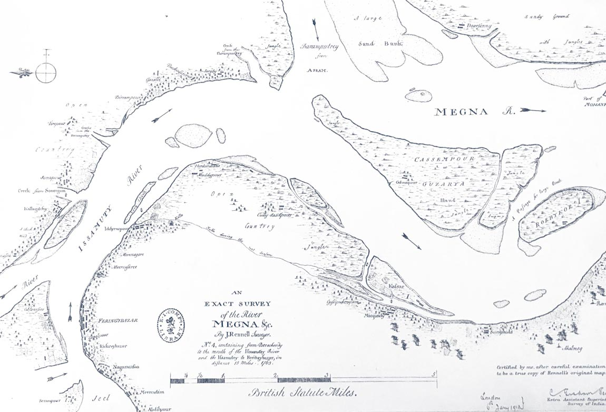
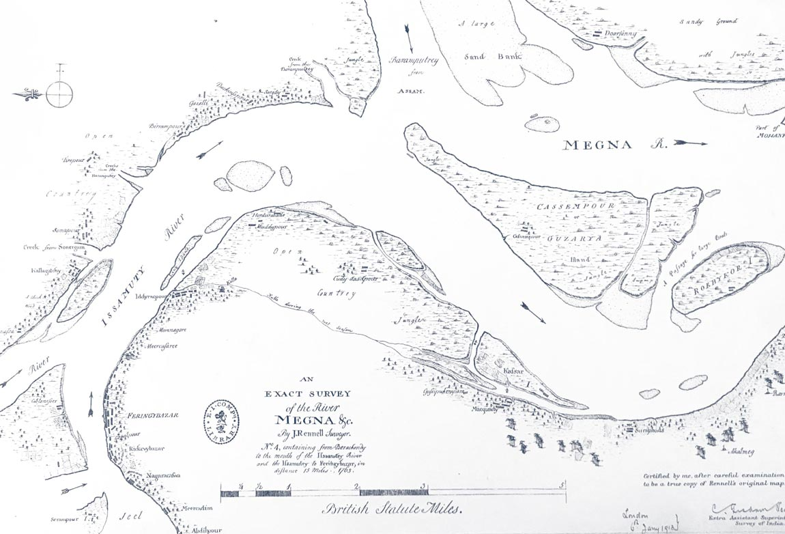

Dhaka
Dhaka lies at the centre of this terra-aqueous monsoonal terrain on the southern edge of a spur of high ground called the Madhupur Tract. This tract of clay floats above the Dupi Tila aquifer, a subterranean reservoir that provides high quality groundwater to the city. Dhaka is bounded by four rivers and criss-crossed by a meshwork of smaller water courses that are seasonally fed by the monsoon. After independence, it expanded northwards along the clay tract, but, more recently growth has been directed westwards, protected by an embankment along the Buriganga River, and eastwards, where it has displaced agricultural lands, lakes and canals and reshaped their hydrological ecologies

Write Caption: Sed ut perspiciatis unde omnis iste natus error sit voluptatem accusantium doloremque laudantium, totam rem aperiam, eaque ipsa quae ab illo inventore veritatis et
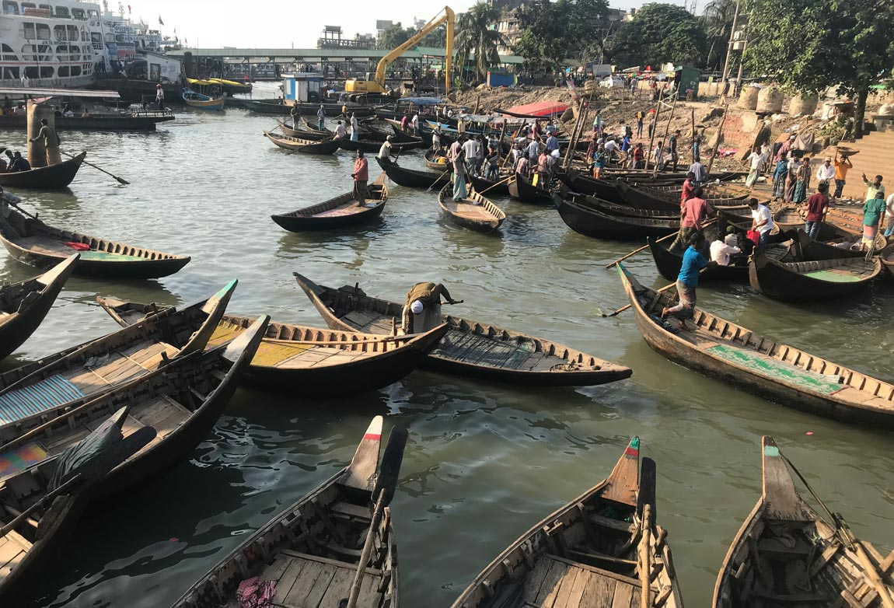
Write Caption: Sed ut perspiciatis unde omnis iste natus error sit voluptatem accusantium doloremque laudantium, totam rem aperiam, eaque ipsa quae ab illo inventore veritatis et
Hydrological
infrastructure
Since the late 1980s, Dhaka East has been the target of speculative urban development driven by the powerful real estate sector. It is an area of low floodplains and marshy lands that are inundated during the monsoon. To prepare land for development, land is elevated above predicted flood levels through a process known as sand pumping. Dredgers suction vast quantities of sand from river beds, which is then pumped from barges via steel pipes into the floodplains and marshlands. Dhaka East is this being reimagined and reformed from the fluid fabric of the monsoon via the extraction and redistribution of sand.


Write Caption: Sed ut perspiciatis unde omnis iste natus error sit voluptatem accusantium doloremque laudantium, totam rem aperiam, eaque ipsa quae ab illo inventore veritatis et
Write Caption: Sed ut perspiciatis unde omnis iste natus error sit voluptatem accusantium doloremque laudantium, totam rem aperiam, eaque ipsa quae ab illo inventore veritatis et
Write Caption: Sed ut perspiciatis unde omnis iste natus error sit voluptatem accusantium doloremque laudantium, totam rem aperiam, eaque ipsa quae ab illo inventore veritatis et

Write Caption: Sed ut perspiciatis unde omnis iste natus error sit voluptatem accusantium doloremque laudantium, totam rem aperiam, eaque ipsa quae ab illo inventore veritatis et
Moghul textiles
Under Moghul rule, Dhaka rose from a humble military outpost to a burgeoning metropolis driven largely by the production of textiles. Royal workshops, with their hub in Dhaka, were established to supervise the manufacture of fine muslin cloth for the court of the Emperor. Over time Dhaka weavers became the most famous in India. Dacca muslin, known as mulmul khas or imperial cloth, gained a reputation for its extraordinary qualities, beauty and fineness. These properties were connected to the city’s monsoonal landscape, in which a particular variety of cotton, locally known as photee, was grown. Temperature and humidity, soil ecology and minerals within the river water imparted it with unique qualities. Weaving was timed in accordance with the humidity of the monsoon and the practice of placing shallow vessels of water beneath looms to keep the fabric moist gave rise to the notion that Dacca muslins were woven under water.


Write Caption: Sed ut perspiciatis unde omnis iste natus error sit voluptatem accusantium doloremque laudantium, totam rem aperiam, eaque ipsa quae ab illo inventore veritatis et
Write Caption: Sed ut perspiciatis unde omnis iste natus error sit voluptatem accusantium doloremque laudantium, totam rem aperiam, eaque ipsa quae ab illo inventore veritatis et


Write Caption: Sed ut perspiciatis unde omnis iste natus error sit voluptatem accusantium doloremque laudantium, totam rem aperiam, eaque ipsa quae ab illo inventore veritatis et
Neoliberal textiles
Following independence in 1971, Bangladesh set in place neoliberal policies that saw an exponential growth in the garment industry. Like the Moghul textile industry had been, the hub of this industry is Dhaka, but unlike it, it supplies cheap clothes to the global market. The modern industry is predicated on the exploitation of cheap labour and what Jason Moore called “cheap nature”.1 Garment production is dependent on water for all steps of manufacturing, from washing and dyeing to textile finishing. Most of the water is sourced from the Dupi Tila aquifer, which is being depleted by millions of cubic metres of water each year. The industry also disposes large quantities of contaminated wastewater into Dhaka’s interlinked rivers and canals. This has meant that many of Dhaka’s rivers have been pronounced biologically dead, with implications for life and livelihoods downstream
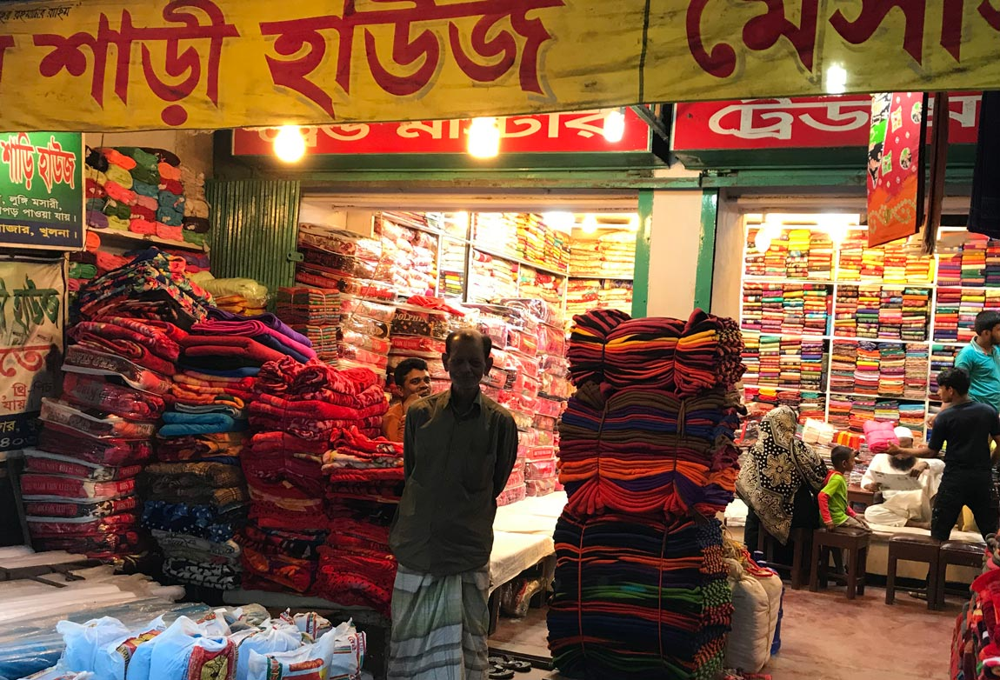 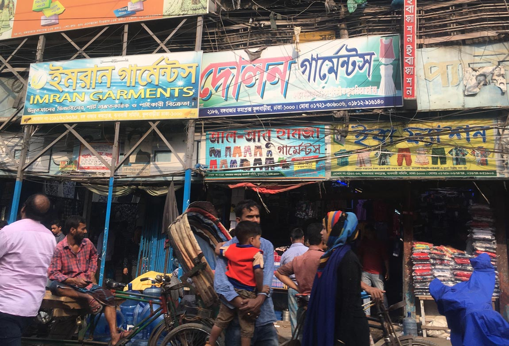
Write Caption: Sed ut perspiciatis unde omnis iste natus error sit voluptatem accusantium doloremque laudantium, totam rem aperiam, eaque ipsa quae ab illo inventore veritatis et
Write Caption: Sed ut perspiciatis unde omnis iste natus error sit voluptatem accusantium doloremque laudantium, totam rem aperiam, eaque ipsa quae ab illo inventore veritatis et
The garment industry
and real estate
The timeline of the rise of the garment sector in Dhaka corresponds closely with the rise of the real estate sector. In the 1970s there were only five registered property developers in Dhaka; by 2004, there were 250 and there are now more than 1,500 active companies. The close ties between the two sectors are embodied in powerful diversified business groups that consist of textile and spinning mills, dredging companies, cement and steel manufacturers and property development. These clusters use their power and political connections to pull strings and acquire land and capital. Such conglomerates dominate Bangladesh’s economy and drive Dhaka’s expansion.

Amphibious architecture in the
Bengal floodplain
Arcadia Education Project, South Kanarchor.
Architect: Saif Ul Haque, 2016.
On October 14, 2011, I was taken to see a site for a
prospective project for a preschool on the outskirts of
Dhaka city. After an hour’s drive from the city, the site
was pointed out to me. To my surprise, I could not see
any land; rather what I saw was a flooded river bank.
I exclaimed “I don’t see any land!” This, of course, is
a typical reaction of an architect who would expect
to see a piece of land for a prospective project, not
water. I was then assured land would emerge within a
couple of weeks.2
Jol O Jongoler Kabbo, Pubail, Gazipur.
Architect: Khondaker Hasibul Kabir, unknown.
Jol O Jongoler Kabbo, meaning ‘the rhythm of water
and forest’ is a weekend retreat designed by landscape
architect Khondaker Hasibul Kabir in Pubail, Bangladesh.
Its architecture is constructed as part of a social
waterscape and encourages multi-sensory engagement.
The resort conserves wetlands and a patch of forest and
employs the neighbouring community in management and
maintenance. The retreat is a counterpoint to the traumatic
transformation of the landscape taking place around it in
the name of industrialisation and development.


1 J.W. Moore, Capitalism in the Web of Life: Ecology and the Accumulation of Capital , London, Verso, 2015.
2 S. Ul Haque, ‘Being Amphibious in the Bengal Floodplain’, in L. Bremner and J. Cook (eds.), Monsoon [+ other] Grounds, London, Monsoon Assemblages, 2020, p. 137, on the beginnings of his Arcadia Education Project, South Kanarchor, Bangladesh, awarded an Aga Khan Award for Architecture in 2018


Write Caption: Sed ut perspiciatis unde omnis iste natus error sit voluptatem accusantium doloremque laudantium, totam rem aperiam, eaque ipsa quae ab illo inventore veritatis et
Write Caption: Sed ut perspiciatis unde omnis iste natus error sit voluptatem accusantium doloremque laudantium, totam rem aperiam, eaque ipsa quae ab illo inventore veritatis et
Write Caption: Sed ut perspiciatis unde omnis iste natus error sit voluptatem accusantium doloremque laudantium, totam rem aperiam, eaque ipsa quae ab illo inventore veritatis et